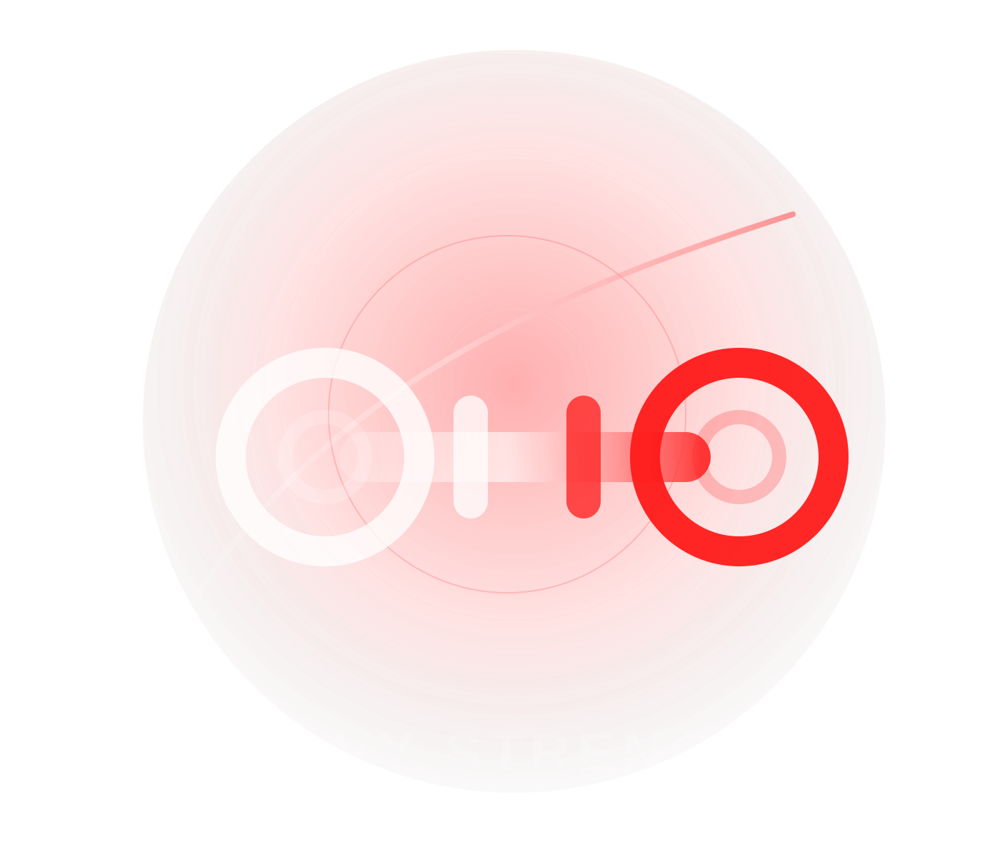
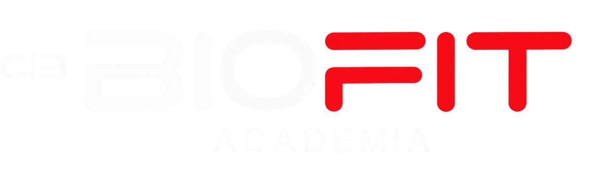
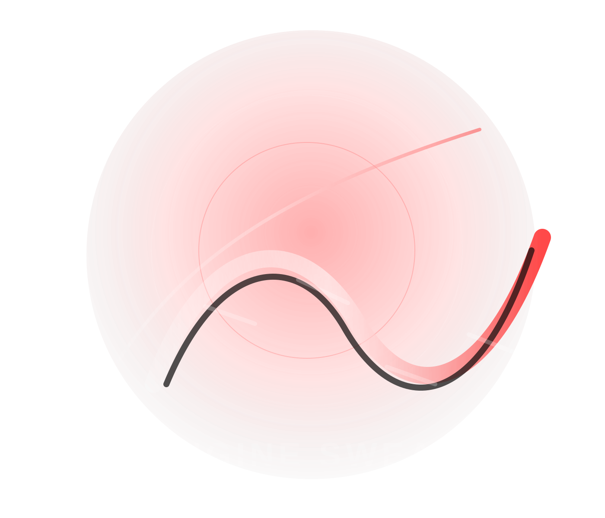
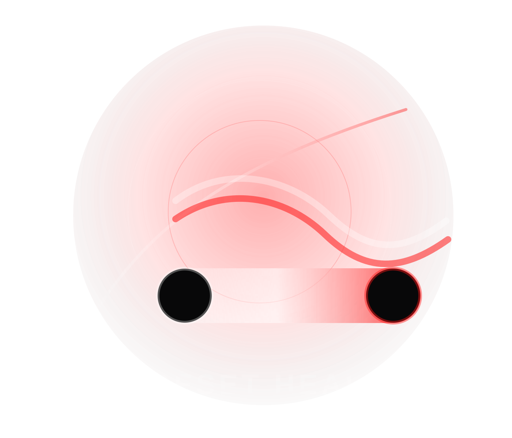
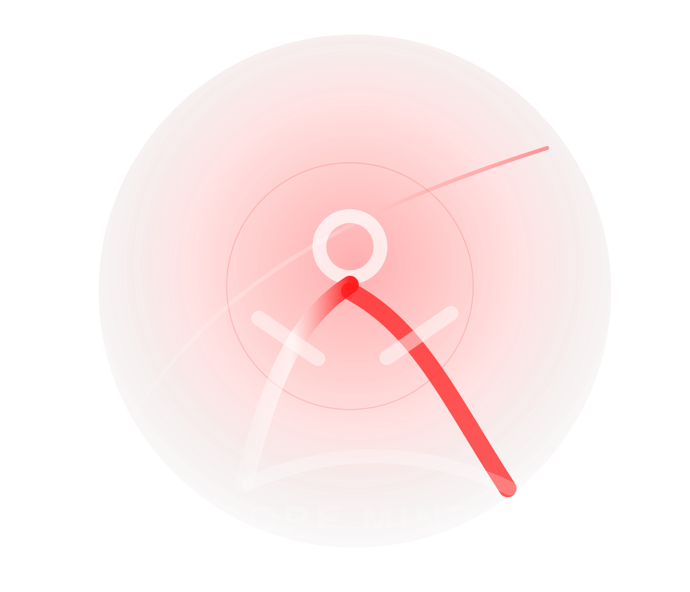
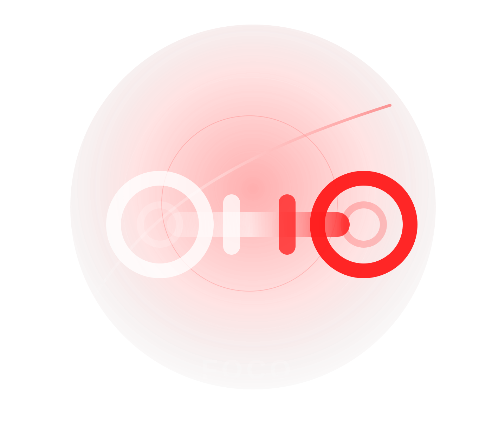

Strength
01 · Heavy Strength
Musculação de Alta Performance
A força bruta encontra a precisão. Uma atmosfera criada para concentração, carga progressiva e evolução física consistente.



Fitness Experience · Projeto Conceitual
Uma narrativa digital sobre performance, bem-estar e disciplina.
Storytelling por scroll
Neste conceito, cada área de treino vira um capítulo visual. O usuário desce a página e sente a transição entre força, suor, recuperação e equilíbrio.
A força bruta encontra a precisão. Uma atmosfera criada para concentração, carga progressiva e evolução física consistente.


Movimento que acelera o corpo e limpa a mente. Um pilar para potência, condicionamento e resistência emocional.
A evolução também acontece no cuidado. Respiração, mobilidade e recuperação para manter o corpo pronto para o próximo desafio.


Força silenciosa, postura e consciência corporal. Um espaço para alinhar performance, mente e bem-estar.
Construção de força, técnica e foco.
Condicionamento, ritmo e resistência.
Mobilidade, cuidado e recuperação.
Consciência corporal e equilíbrio.

Este CTA é fictício e faz parte da apresentação de portfólio. Ele pode futuramente receber formulário, WhatsApp ou integração real.